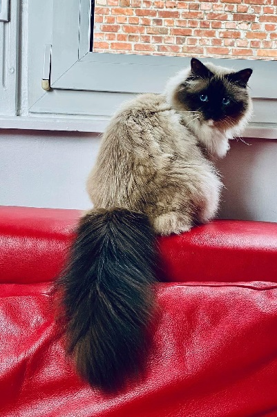

My Website
Problem1.My name is Capra Chu
高中讀的是建中:
連結在這裡
現在在台大電機系:
連結在這裡
Problem2.My hobbies
興趣1:看漫畫
宅弊了
興趣2: 音樂
讚
興趣3: 看實況
uwu
Problem3.Photo

Problem4.Icon
Problem5.music
Problem6.css
用css把字變藍了欸╰(*°▽°*)╯
Problem7.time and data
Problem8.Publish
$ git add index.html
$ git commit -m "add index"
[master (root-commit) 80450b2] add index
1 file changed, 10 insertions(+)
create mode 100644 index.html
$ git remote add origin https://github.com/capraowo/capraowo.github.io.git
$ git push -u origin master
Counting objects: 3, done.
Delta compression using up to 4 threads.
Compressing objects: 100% (2/2), done.
Writing objects: 100% (3/3), 327 bytes | 327.00 KiB/s, done.
Total 3 (delta 0), reused 0 (delta 0)
To https://github.com/capraowo/capraowo.github.io.git
* [new branch] master -> master
Branch master set up to track remote branch master from origin.